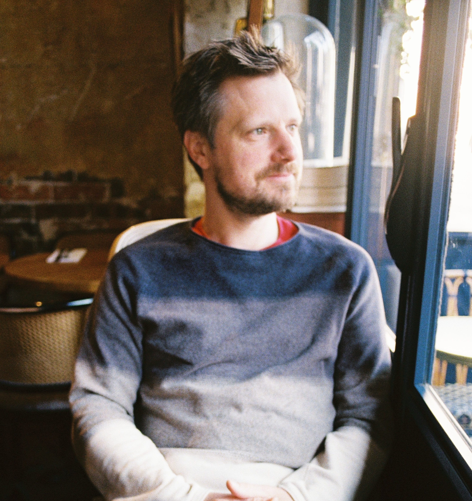
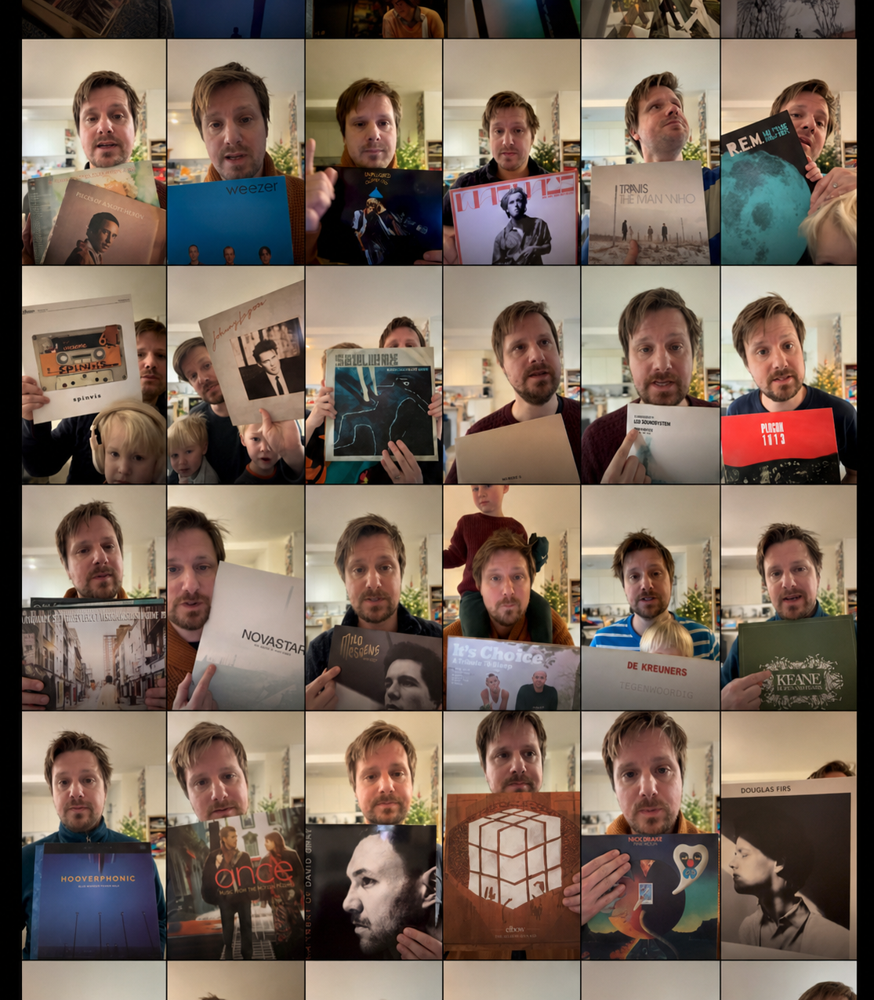
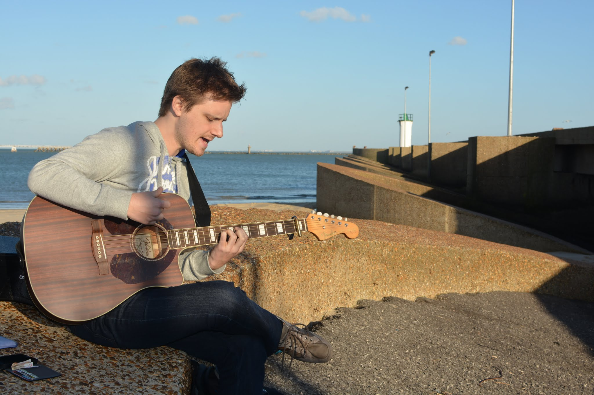
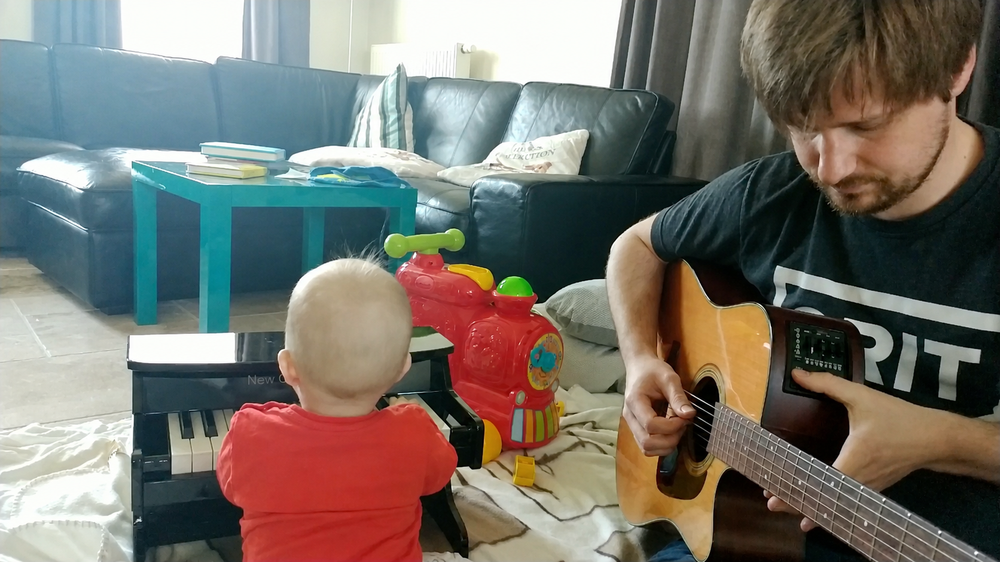
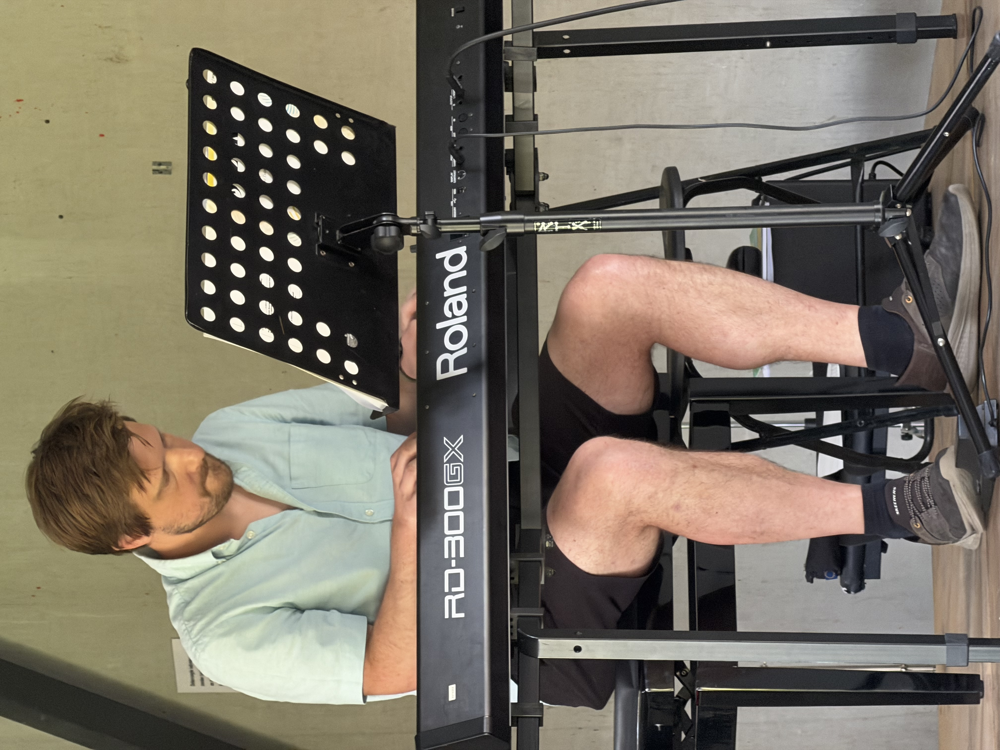

Product thinking
Turning complex customer problems into clear product choices, and helping teams move from an idea to something people can actually use.
I work where product, technology and customers meet — with a soft spot for making software work together.
From banking and enterprise sales to PieSync and product management at HubSpot, I’ve worked across the commercial and technical sides of software. Outside of work, I enjoy music and photography and have my hands full raising three kids.

From online banking and enterprise customers to making software work together. Most recently at PieSync and HubSpot.
I helped PieSync through its acquisition by HubSpot in 2019 and helped integrate it into HubSpot’s integration architecture. Along the way, I moved from solutions engineering to go-to-market work, then Product Manager and Senior Product Manager.
At Engagor, a social media engagement SaaS company, I sold to major transport companies and telcos. I started as an account executive, then moved into solutions engineering, getting closer to the technical side of customer problems.
At Fortis, I worked on PC Banking and SEPA Direct Debit. Fortis became BNP Paribas Fortis along the way — a first acquisition story I can’t claim much credit for.
How I work
I tend to work where those worlds overlap — helping each understand the others and turning complexity into something teams can act on.
Turning complex customer problems into clear product choices, and helping teams move from an idea to something people can actually use.
Comfortable between customers, product and engineering — especially where APIs, integrations, ERPs, CRMs and customer data meet.
Bridging what a product can do, what customers need and what a commercial team can successfully bring to market.
Languages are keys to other cultures. They help me understand different perspectives and make ideas travel across borders.
Beyond work
Outside product work, I make time for photos, music and learning instruments—small ways of paying attention and staying curious.
I shoot with a Fujifilm X-T30 III, usually paired with old Nikon lenses. It’s really my way of paying closer attention to places, people, atmosphere and rhythm. These images were all taken over the past six months.
In our house, we keep the music that shaped us in a “platenkast”, a record collection to share with our children. Every now and then, I record a short review: a small time capsule made for my kids to discover 15 or 20 years from now.

Guitar, piano and now bass. I enjoy playing them, but perhaps even more than that, I enjoy the never-ending process of learning them.



Contact
You can find me on LinkedIn and Bluesky. Feel free to reach out about product, technology, photography or anything worth exploring.